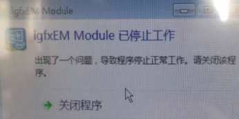

经典案例：梅河口金峰食品
设备故障状态：设备在运行一段时间后，随后输送带停止，设备不工作，重启后又正常，再运行一段时间后又出现相同故障问题，报错图如下：
报错图片一：
报错图片二：
解决方法如下：
1、将外接鼠标键盘插入设备内部工控机上。
2、打开设备，进入系统桌面，打开Windows系统任务管理器，检测设备内存使用情况，初步判断是否病毒造成设备无法使用（如下图）
3、观察内存使用情况，一段时间后，内存占用率是否逐渐上升，最终会在90%以上时发生软件报错，设备停止工作，此时应考虑是否系统内部其他程序导致内存占用过大。
4、处理方法，下载360或其他杀毒软件到设备上，打开杀毒软件进行扫描查杀病毒（如下图）
5、杀毒完成后，重新启动工控机，在任务管理器中继续监控内存使用情况，若一直稳定在30%——40%左右时，则问题解决！